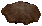
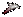
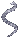
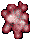
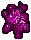
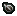
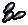
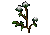

布

革

鱗

骨

ML
BOSS

SA素材
布 |
革 |
鱗 |
骨 |
ML BOSS |
SA素材 |
 dragon blood ： ドラゴン系モンスターやTer Murに生息する動物・モンスターの死体を捌いて入手します。
dragon blood ： ドラゴン系モンスターやTer Murに生息する動物・モンスターの死体を捌いて入手します。
|
動物・モンスター |
| 4 | chicken lizard fairy dragon |
| 6 | slith系 kepetch系 |
| 8 | raptor boura系 dragon系 ancient wyrm serpentine dragon |
| 48 | Stygian Dragon |
| モンスター(Ter Murのみ) | |
| 5 | anlorzen anzuanord betballem |
| 15 | anlorlem relanord ballem |
| 30 | anlorvaglem vasanord usagralem ballem |
| 画像 | 名前 | プロパティ | 入手方法 |
|  | boura pelt [ボウラの毛皮] |
属性抵抗 (弓・投擲以外) |
boura (lowland, ruddy, high plains) の戦利品 |
 |
slith tongue [slithの舌] |
dispel | slith (normal, stone, toxic) の戦利品 |
|  | raptor teeth [raptorの歯] |
エリア攻撃 | raptorの戦利品 |
|  | silver snake skin [シルバースネークの皮] |
詠唱可 | 諸王の墳墓、Holy Cityのクエストで出現するsilver serpentの戦利品 |
 |
undying flesh [不死の肉塊] |
アンデッド族特効 | undead guardian (normal, putrid)の戦利品 |
 |
goblin blood [goblinの血] |
亜人種特効 | goblin系生物の戦利品 |
 |
vial of vitriol [硫酸の小瓶] |
アンデッド族特効 | acid slugの戦利品。錬金スキルで作成可 |
 |
daemon claw [デーモンの爪] |
悪魔族特効 | fire daemonの戦利品 |
 |
spider carapace [クモの甲殻] |
鋏角類特効 | trapdoor spiderの戦利品 |
 |
lava serpent crust [lava serpentの表皮] |
爬虫類特効 | lava elementalの戦利品 |
 |
vial of ichor [イコルの瓶] |
Night Sight | wolf spider, trapdoor spiderの戦利品。錬金スキルで作成可 |
 |
reflective wolf eye [光る狼の眼] |
物理ダメージ反射 | clan scratch savage wolfの戦利品 |
 |
faery dust [妖精の粉] |
秘薬コスト | Atygian Abyss内、fairy dragon, wispおよびpixieの戦利品 |
 |
essence of control [統制のエッセンス] |
速度 | 統制エリア内モンスターの戦利品 |
 |
essence of passion [情熱のエッセンス] |
lightning | 情熱エリア内モンスターの戦利品 |
|  | essence of diligence [勤勉のエッセンス] |
キャストリカバリ | 勤勉エリア内モンスターの戦利品 |
 |
essence of direction [目標のエッセンス] |
遠距離ボーナス | 目標エリア内モンスターの戦利品 |
 |
essence of feeling [感情のエッセンス] |
magic arrow | 感情エリア内モンスターの戦利品 |
 |
essence of balance [均衡のエッセンス] |
片手使用可 | 均衡エリア内ratman系モンスターの戦利品 |
 |
essence of achievement [達成のエッセンス] |
ファストキャスト | 達成エリア内モンスターの戦利品 |
|  | essence of precision [正確のエッセンス] |
命中 (弓・投擲以外) |
正確エリア内モンスターの戦利品 |
|
essence of order [秩序のエッセンス] |
マナコスト | 秩序エリア内モンスターの戦利品 |
 |
essence of singularity [単一のエッセンス] |
回避 (弓・投擲以外) |
単一エリア内モンスターの戦利品 |
 |
chaga mushroom [チャーガ茸] |
幸運 | 諸王の墳墓、大広間〜Abyssへの道中 Premival Lichエリア内に自生 |
 |
delicate scales [精密天秤] |
ベストウェポンスキル | 均衡エリア内ratman系モンスターの戦利品。釣りで入手可 |
 |
abyssal cloth [アビス布] |
瞑想可 | 均衡エリア内ratman系モンスターの戦利品。裁縫スキルで作成可 |
 |
arcanic rune stone [アーケインルーン] |
魔道武器 | 均衡エリア内ratman系モンスターの戦利品。細工スキルで作成可 |
 |
powdered iron [鉄粉] |
耐久性 | 均衡エリア内ratman系モンスターの戦利品。鍛冶スキルで作成可 |
 |
crystal shards [クリスタル片] |
武器ダメージ 魔法ダメージ |
均衡エリア内ratman系モンスターの戦利品。Ter Mur内の伐採で入手可 |
 |
crushed glass [割れたガラス] |
ポーション強化 | 均衡エリア内ratman系モンスターの戦利品。鍛冶スキルで作成可 |
|  | seed of renewal [復活の種] |
ステータス回復 | 均衡エリア内ratman系モンスターの戦利品。ガーデニングの種採取時に入手可 |
|  | elven fletching [エルフの矢羽] |
装備条件 | 均衡エリア内ratman系モンスターの戦利品。弓工スキルで作成可 |
 |
crystalline blackrock [ブラックロック結晶] |
スキル | 均衡エリア内ratman系モンスターの戦利品。鉱石エレメンタルの戦利品。Ter Mur内の採掘で入手可 |
 |
void orb [虚無のオーブ] |
リーチ系 | Ter Murに棲むVoidモンスターの戦利品。細工スキルで作成可 |

| ボス | 上級素材 | 中級素材 |
| Dread horn |  dread horn mane dread horn mane[ドレッドホーンのたてがみ] |
 blight [病毒] blight [病毒]
corruption [堕落のウミ]  muculent [粘液] muculent [粘液]
 putrefaction [腐敗物] putrefaction [腐敗物]
 scourge [苦悩の根源] scourge [苦悩の根源]
 taint [汚染物] taint [汚染物]
|
| Lady Melisande |  diseased bark diseased bark[疫病の樹皮] |
|
| Travesty | eye of Travesty [トラベスティーの眼] |
|
| Chief Paroxysmus |  lard of Paroxysmus lard of Paroxysmus[パロキシスマスの脂] |
|
| Shimmering Effusion |  captured essence captured essence[封じた霊気] |
|
| Monstrous Interred Grizzle |  grizzled bone grizzled bone[白っぽい骨] |
 pile of wool [羊毛] ： 刃物をsheepに使うことで採取できる。
pile of wool [羊毛] ： 刃物をsheepに使うことで採取できる。
 spool of thread [糸]
spool of thread [糸] ball of yarn [毛糸球]
ball of yarn [毛糸球] spinning wheel[糸車] ： 糸および毛糸球を作成するための施設。
spinning wheel[糸車] ： 糸および毛糸球を作成するための施設。 upright loom[織り機] ： 布を作成するための施設。pile of wool [羊毛]を糸車に使い、糸や毛糸球にする必要があります。
をダブルクリックします。1つで入手できる糸・毛糸玉の量は、下記のとおりです。
×6×6 → ×3 をダブルクリックします。
upright loom[織り機] ： 布を作成するための施設。pile of wool [羊毛]を糸車に使い、糸や毛糸球にする必要があります。
をダブルクリックします。1つで入手できる糸・毛糸玉の量は、下記のとおりです。
×6×6 → ×3 をダブルクリックします。
 pile of hide [皮の山] が死体のなかにでき、回収することができます。
pile of hide [皮の山] が死体のなかにでき、回収することができます。
 scissors [鋏] をダブルクリックし、自分のバックパック内の皮の山をターゲットに指定します。leather [切った皮] となります。
scissors [鋏] をダブルクリックし、自分のバックパック内の皮の山をターゲットに指定します。leather [切った皮] となります。  skinning knife [皮はぎナイフ]
skinning knife [皮はぎナイフ]
 butcher's war cleaver [肉屋のクリーバー]
butcher's war cleaver [肉屋のクリーバー]
harvester's blade [収穫祭のナイフ]
鞄にある状態でそれを使って皮を剥ぐと、切った皮となり自分の鞄に入る。他、刃物を入れて採取できるものもまとめて鞄に入る。((15×1.1[刃物])×1.1[種族])×2[ルール]＝38枚
( )内は端数切上
| 枚数 | 動物・モンスター |
| 1 | rabbit |
| 4 | bullfrog |
| 5 | timber wolf |
| 6 | grey wolf white wolf giant rat gorilla mongbat(strong) |
| 8 | goat hind snow leopard deathwatch beetle deathwatch beetle hatchling |
| 10 | couger panther horse slith |
| 枚数 | 動物・モンスター |
| 12 | cow llama mountain goat brown bear black bear walrus ridgeback(dismount) rune beetle |
| 15 | bull great hart gaman |
| 16 | grizzly bear polar bear |
| 20 | swamp dragon yamandon |
| 25 | tsuki wolf |
| 30 | bake kitsune |
| 60 | lesser hityu hiryu |
| 枚数 | 動物・モンスター |
| 6 | imp |
| 7 | dire wolf leather wolf |
| 8 | ratman(normal, archer, mage) centaur |
| 10 | hell cat stone slith |
| 枚数 | 動物・モンスター |
| 12 | lizardman alligater ridgeback giant toad kepetch |
| 15 | giant serpent ice serpent lava serpent |
| 20 | lowland boura ruddy boura |
| 枚数 | 動物・モンスター |
| 10 | sea serpent unicorn ki-rin toxic slith raptor |
| 12 | kepetch ambusher |
| 20 | wyvern drake high plains boura |
| 枚数 | 動物・モンスター |
| 6 | fairy dragon |
| 10 | nightmare |
| 20 | dragon white wyrm shadow wyrm serpentine dragon |
| 30 | greater dragon |
| 40 | ancient wyrm |
(8×1.1[刃物])×2[ルール]＝18枚
( )内は端数切上
| モンスター | 入手できる鱗の色および枚数 |
| drake(red) |  ×2 ×2 |
| dragon(red) | ×7 |
| drake(brown) |  ×2 ×2 |
| dragon(brown) | ×7 |
| white wyrm |  ×9 ×9 |
| sea serpent | ×8 |
| deep sea serpent | ×8 |
| shadow wyrm |  ×10 ×10 |
| swamp dragon |  ×5 ×5 |
| chaos dragoon | 装備している鎧の色×1 |
| serpentine dragon | or×6 |
| ancient wyrm | の どれか1種×12 |
| Rikktor(爬虫類ボス) | 全6種×20 |
| 骨の画像 | 重量 | 本数 |
Bone Pile |
10 | 10本 |
 Bone Pile |
10 | 10本 |
Bone Pile |
15 | 15本 |
Bone Pile |
10 | 10本 |
| 骨の画像 | 重量 | 本数 |
Rib Cage |
5 | 5本 |
Spine |
3 | 3本 |
Bone Shards |
3 | 3本 |
Pelvis Bone |
1 | 1本 |
Jaw Bone |
1 | 1本 |
Bone |
1 | 1本 |
となる。